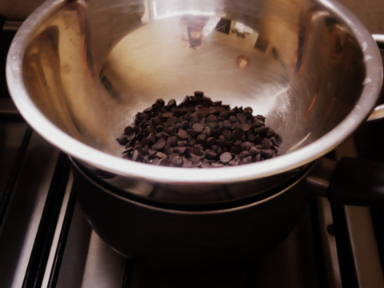
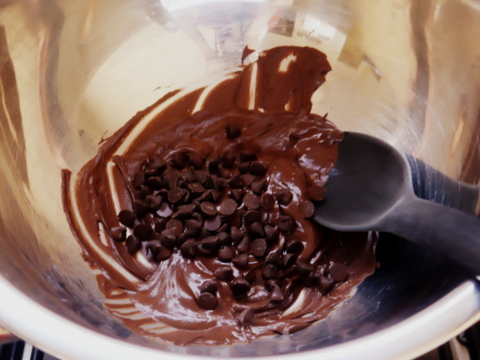
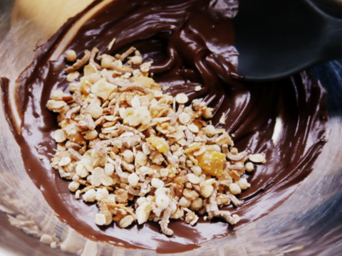
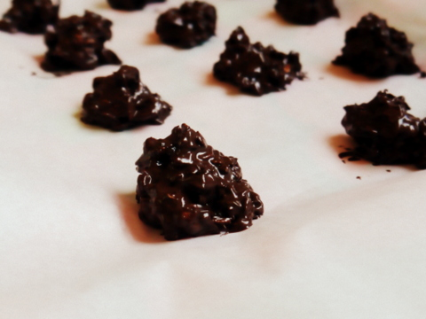

Bienvenidos a este post. Hoy aprenderemos a hacer una receta de bombones de chocolate.Si estábas buscando como hacer esta receta de manera fácil y rápida, estás en el lugar indicado.
Ingredientes:
1/2 taza de chips de chocolate semi amargo.
1/2 de granola.
¡Increíble, solo dos!
Pasos a seguir:
Poner a derretir el chocolate a baño maría, teniendo la precaución de que el agua no hierva. Reservar 2 cdas. de chips sin derretir.

Cuando esté bien derretido, retirar del calor y añadir las 2 cdas. de chips que guardaste anteriormente. Revolver enérgicamente hasta que estos chips se derritan con el propio calor del chocolate. (El motivo por el que hacemos esto es para bajar la temperatura del chocolate derretido.)

Agregar granola al chocolate y revolver bien.

Colocar cucharaditas pequeñas de la mezcla en una placa cubierta de papel manteca.

Llevar al congelador por media hora, y luego pasar a heladera.